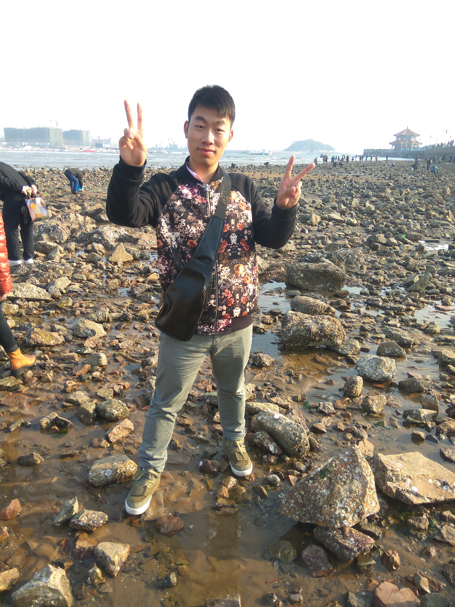

关于我

我叫卓海，性别：男，出生年月：1995.10，来自江苏徐州睢宁，现坐标杭州，是一名致力于全栈工程师的前端工程师，学历：扬州大学本科，专业：网络工程，英语等级4级
求职意向
web前端工程师
-
PC端网页制作（前后端交互，普通的，响应式的（媒体查询）等）
多页面公司官网，前后端交互商城（首页，列表页，详情页，登录，注册表单验证），运用require.js进行模块化开发，便于代码管理
-
移动端web app(react,vue配合前端自动化构建工具webpack)
移动端单页面应用开发，运用前端自动化构建工具webpack进行代码编译，打包，压缩，优化程序，浏览时，减少请求流量损耗
-
后台管理系统（node.js配合前端自动化构建工具webpack）
运用node.js配合mongodb非关系型数据库进行开发
专业与技能
- 熟练使用html,css,js,以及css3和h5，es5和es6，es7,es8相关规范
- 熟练使用jquery库，vue.js，react.js现代前沿框架配合前端自动化构建工具webpack,gulp等进行单页面应用开发和多页面应用开发，对angular.js也有了解
- 在开发过程中也使用过swiper、iscroll等类库插件，以及bootstrap,elementui等ui框架
- 熟练使用sass，less预编译语言
- 熟练使用common.js，AMD，CMD规范进行项目开发
- 熟练使用svn,git管理工具
- 通常使用vscode,sublime text，hbuilder,webstorm工具进行前端开发
- 此外对于mysql，mongodb,以及后端语言php能够进行操作数据库实现增删改查
- 掌握node.js，上手过后台管理项目
作品集
-
原生js以及jquery配合swiper类库等，自适应各种手机型号，轮播图，搜索等
微信端打开地址
-
康澈试用商业项目（已经上线-支持pc端和移动，响应式，移动端自适应
使用jquery,以及公司组件库，实现调查问卷，点赞，评论，上传组件等
点击在线查看
-
用vue-cli配合webpack搭建开发环境，主要用到vue-swipe插件，mint-ui框架（实现滚动无限加载），实现主页置顶菜单，轮播图，滚动无限加载，以及根据关键字搜索功能，以及商家列表页跳转对应的详情页
点击我查看源码
-
用react配合webpack进行模仿饿了么外卖平台开发，不同路由匹配不同组件切换，主要用了"react-addons-css-transition-group"(过渡效果),“react-infinite-scroller”（滚动无限加载），“react-swipe”（轮播切换），以及redux,react-redux状态管理等类库，实现主页置顶菜单，轮播图，滚动无限加载，以及根据关键字搜索功能，以及商家列表页跳转对应的详情页
点击我查看源码
-
运用node.js，以及express框架，以及非关系型数据库mongodb，实现后台管理页面新产品上架，以及产品下架，产品信息更新，产品分类（根据种类查找商品），分页，搜索，以及侧边栏隐藏与显现
点击我查看源码
教育背景及大学荣誉
- 2013.9-2017.6 扬州大学 网络工程 本科
自我评价及综合素质
没有做不到的自己，只有不努力的自己，性格随和开朗，谦虚自信，理性乐观。工作认真、负责，有上进心，具有良好的团队合作精神，在大学里担任校区经理，带30人左右团队进行策划，销售工作，对于销售和团队管理都有一定经验，接受和适应能力强，执行力强，善于在实践中积累学习，不断完善。勇于接受新的挑战，能够接受加班和出差。